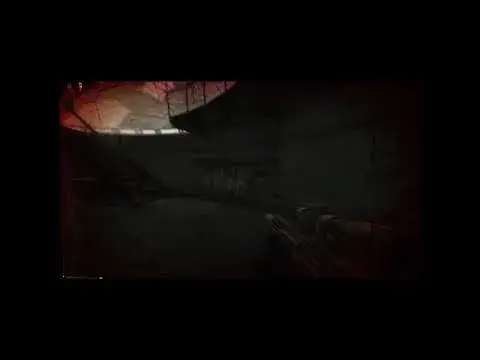

Mod
female pmc voice (USEC)
- Downloads
- 2,057
- Favourites
- 8
- Mod lists
- 22
The author marked this item as containing advertising.
features
-
651 voice lines! these are basically, to be honest, just the usec3 (josh) voice lines but female
voice by thelivingmythVA
https://www.castingcall.club/jessie-rogers
https://www.youtube.com/@thelivingmythVA
requirements
- WTT CommonLib (wont work without it)
mods recommended to be used with this mod
- https://forge.sp-tarkov.com/mod/1519/wtt-waac-womens-advanced-assault-corps
- https://forge.sp-tarkov.com/mod/1994/dlc-vanilla-fem-clothing
voice lines preview

Version
1.0.2
SPT 4.0.13
Fika: compatible
2,057 downloads63.3 MB
-adjusted all voice lines
-hopefully fixed broken bot voice voice lines
-fixed death sounds for player not always playing correctly